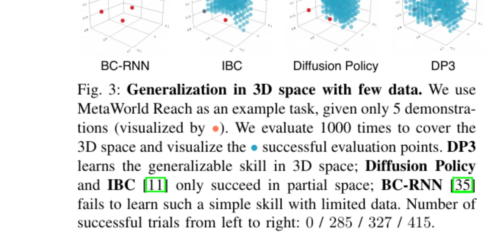
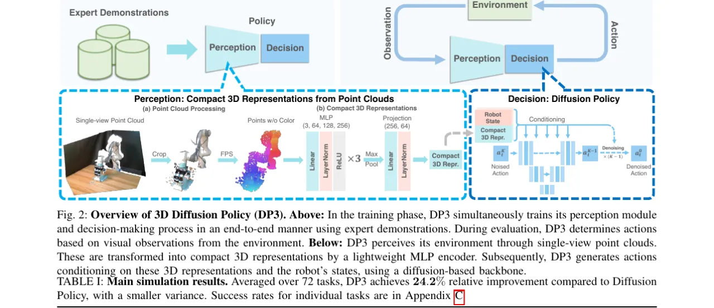
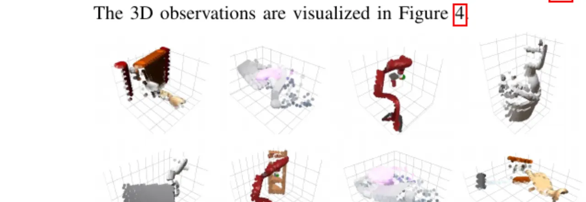
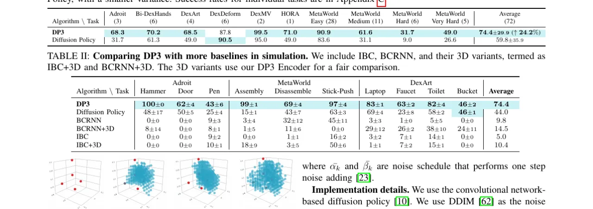
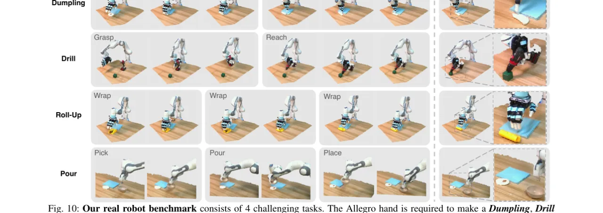
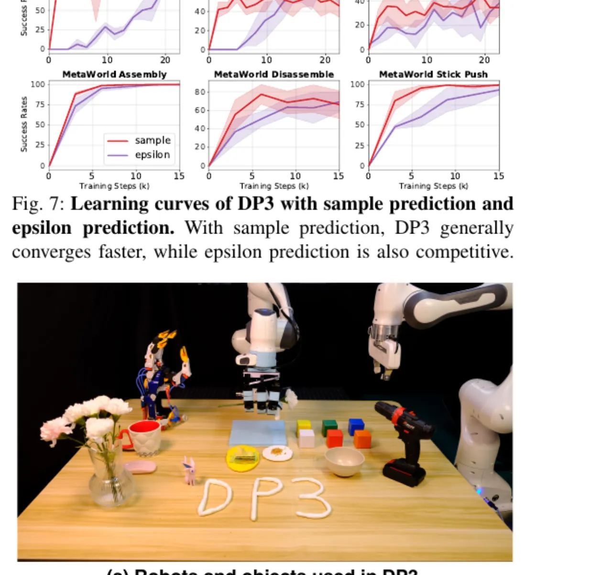

DP3 将紧凑的 3D 点云视觉表征与 Diffusion Policy 相结合，提出一种高效的视觉运动策略学习框架。仅需 10 条演示数据，即可在 72 个仿真任务中大幅超越 2D 基线；在 4 个真实机器人灵巧操作任务上，以 40 条演示实现平均 85% 的成功率，并展现出跨空间、视角、外观与实例的强泛化能力。
模仿学习为机器人提供了一条习得复杂技能的有效路径，但现有方法主要依赖 2D 图像或深度图作为视觉输入，在处理空间理解、视角变化与实例泛化等问题时存在明显局限。如何以最简单的方式引入 3D 信息，同时保持策略学习的高效性与泛化性，是本文要解决的核心问题。
"Enabling robots to dexterous manipulation of objects is a longstanding challenge for roboticists, primarily due to the necessity to manage a broader spectrum of motor skills… Visual imitation learning, which takes high-dimensional visual observations such as images or depth maps, eases the need for task-specific state estimation and thus gains its popularity."
现有方法（如 Diffusion Policy）以 2D RGB 图像为输入，面临两大核心挑战：
本文核心假设：稀疏点云提供的紧凑 3D 表征天然具备几何一致性，无需颜色通道即可实现优越的泛化，且单视角点云（仅一台 RealSense L515 相机）已足够。

DP3 由两个模块构成：Perception（感知）模块将来自单视角深度相机的稀疏点云编码为紧凑的 3D 特征；Decision（决策）模块以 Diffusion Policy 为骨干，在机器人状态（关节角）条件下预测动作序列。两模块端到端联合训练。

深度图经相机内参投影为点云，随后经过以下处理：

决策模块采用基于卷积网络的 Diffusion Policy（DDIM 噪声调度器）。以机器人关节状态 s 与感知特征 v 为条件，通过去噪过程预测未来 T 步动作序列。训练目标为：
L = MSE(εθ(αka0 + βkε, k, v, s), ε)
其中 αk、βk 为噪声调度参数，采用 one-step noise adding 策略。推理时使用 sample prediction（而非 epsilon prediction）以获得更快的收敛速度。实现细节：使用卷积网络 Diffusion Policy，DDIM 噪声调度；在 MetaWorld 任务上训练 1000 epochs，其他任务训练 8000 epochs；batch size 为 128；Projection head 输出维度为 1024 或 256。
仿真基准：72 个任务，跨 7 个领域（Adroit、Bi-DexHands、DexArt、DexDeform、DexMV、HORA、MetaWorld），涵盖阴影手 / Allegro 手 / 平行夹爪等多种机器人形态，任务类型包含刚性/变形物体操作。每个任务仅使用 10 条演示（DexArt 和 HORA 除外）。真实机器人：4 个灵巧任务（Roll-Up、Dumpling、Drill、Pour），每任务 40 条演示，使用 Frankia 手臂 + Allegro 手 / 平行夹爪，RealSense L515 单目深度相机。

| 算法 | 仿真平均（72任务） | Adroit Hammer | MetaWorld Easy | 真实机器人平均 |
|---|---|---|---|---|
| DP3 | 74.4 ± 29 | 100 ± 0 | 90.9 | 85% |
| Diffusion Policy | 59.8 ± 9 | 48 ± 17 | 95.0 | — |
| BCRNN | 48 ± 17 | 0 ± 0 | — | — |
| IBC | 0 ± 0 | 0 ± 0 | — | — |

论文对 3D 表征选择、点云编码器设计和 DP3 设计细节进行了系统消融（Tables IV–VII）：

论文明确指出："Though we demonstrate the importance of 3D representations, the optimal 3D representation for control is still yet discovered." 当前 DP3 选择了稀疏点云 + 轻量 MLP，但其他 3D 表征（如隐式场、Gaussian splatting、dense voxel grid）是否更优仍是开放问题。
DP3 在视角泛化实验（Table IX）中，对轻微视角偏移通过点云变换保持一致性；但论文也指出"it is important to acknowledge that while the network can generalize across minor variations in camera views, significant changes might be hard to handle." 较大视角变化（如从顶视到侧视）仍具挑战。
DP3 使用单目深度相机，点云质量依赖深度图精度。在遮挡严重或反光材质（如金属、玻璃）场景下，点云噪声增大；同时论文也提及 "Cluttered Scenes" 需要 50 条演示（对比标准 40 条），说明场景复杂度对数据需求有影响。
论文提及双手操作、可变形物体操作等复杂场景均在仿真中测试，真实机器人任务（4 个）均为单阶段。论文明确将"exploring tasks with long horizons"列为未来工作方向。